먼저 생각해 보세요.
Ich freue mich. Du freust dich. ich와 함께 쓰인 mich는 누구를 가리키나요?
sich freuen 같은 동사는 주어와 같은 사람을 가리키는 mich, dich를 함께 써요.
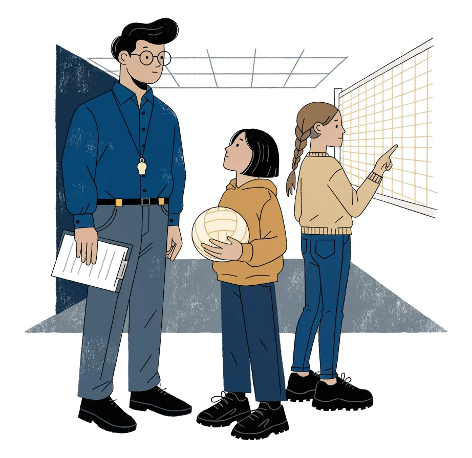
5월이에요. Yuna가 Emma를 따라 스포츠 클럽(Sportverein)의 배구 연습에 왔어요. 오늘 클럽에 등록하려고 해요.
눌러서 들어 보세요.
먼저 생각해 보세요.
Ich freue mich. Du freust dich. ich와 함께 쓰인 mich는 누구를 가리키나요?
sich freuen 같은 동사는 주어와 같은 사람을 가리키는 mich, dich를 함께 써요.
Lektion 4의 낱말 다섯 개를 다시 떠올려 보세요.
문법 reflexive Verben (sich anmelden, sich freuen), deshalb, trotzdem, sich interessieren für
이 과를 마치면 운동과 동아리를 소개하고, 클럽에 등록을 문의하고, 무엇에 관심이 있는지 말할 수 있어요.
화요일 오후, 스포츠 클럽의 체육관이에요. Yuna가 배구 코치 Herr Becker를 만나요.
들으면서 찾아보세요. 배구 연습은 무슨 요일에 있나요?
다음 날 아침, 학교 가는 길이에요.
들으면서 찾아보세요. Lukas는 일주일에 몇 번 연습하나요?
두 대화를 듣고 답하세요.
배구 연습은 무슨 요일에 있나요?
Was kostet der Beitrag?
Yuna muss ein Formular ausfüllen.
Yuna는 왜 피곤해 보이나요?
Lukas는 일주일에 몇 번 연습하나요?
Elif interessiert sich nicht für Sport.
Doch! Tanzen ist auch Sport. 춤도 운동이라고 했어요.
Wann treffen sich die Schüler in der Tanz-AG?
낱말 31개예요. 낱말이나 예문 앞의 단추를 누르면 소리가 나요. 명사는 der, die, das를 색으로 구분했어요.
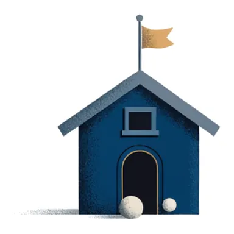
der Verein, die Vereine 동호회, 클럽
Lukas spielt im Verein Fußball.Lukas는 클럽에서 축구를 해요.
das Mitglied, die Mitglieder 회원
Der Verein hat viele Mitglieder.그 클럽은 회원이 많아요.
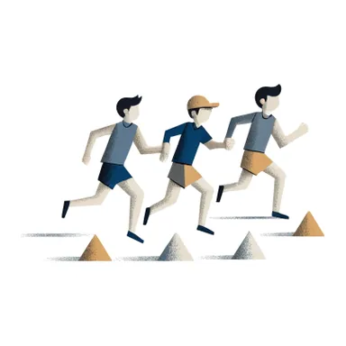
das Training 훈련, 연습
Das Training ist am Dienstag.연습은 화요일에 있어요.
trainieren, hat trainiert 훈련하다, 연습하다
Wir trainieren zweimal in der Woche.우리는 일주일에 두 번 연습해요.
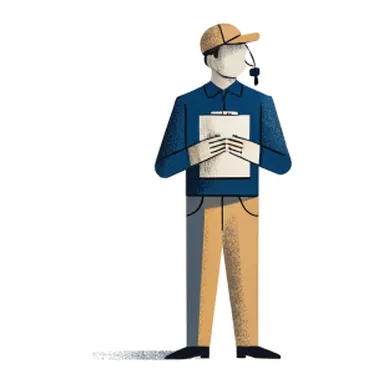
der Trainer, die Trainer 코치, 감독
Der Trainer ist nett.코치님은 친절해요.
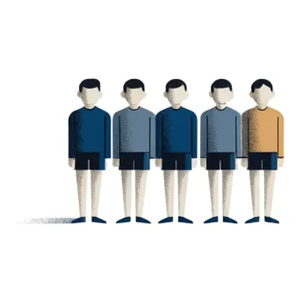
die Mannschaft, die Mannschaften 팀
Die Mannschaft spielt am Samstag.팀은 토요일에 경기를 해요.
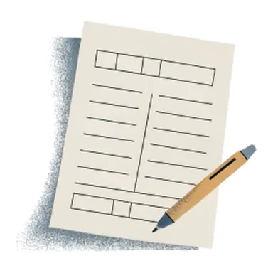
das Formular, die Formulare 신청서, 서류
Hier ist das Formular.여기 신청서가 있어요.
ausfüllen, hat ausgefüllt (서류를) 작성하다
Füll bitte das Formular aus.신청서를 작성해 줘.
unterschreiben, hat unterschrieben 서명하다
Meine Mutter muss unterschreiben.어머니가 서명하셔야 해요.
der Beitrag, die Beiträge 회비
Der Beitrag kostet zehn Euro im Monat.회비는 한 달에 10유로예요.
kostenlos 무료의
Das Training ist heute kostenlos.오늘 연습은 무료예요.
mitmachen, hat mitgemacht 함께 하다, 참여하다
Du kannst heute mitmachen.오늘 같이 해도 돼.
die AG, die AGs (학교의) 방과 후 동아리
Elif ist in der Tanz-AG.Elif는 춤 동아리에 있어요.
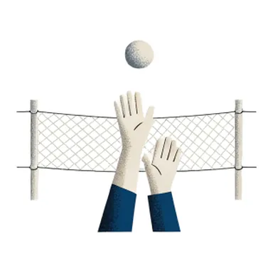
Volleyball 배구
Emma spielt Volleyball.Emma는 배구를 해요.
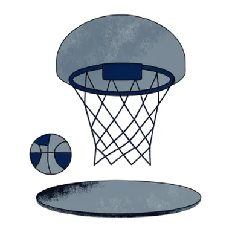
Basketball 농구
Can spielt Basketball.Can은 농구를 해요.
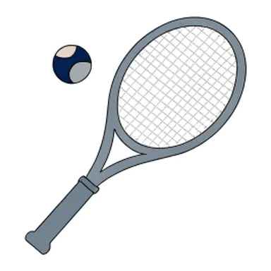
Tennis 테니스
Spielst du Tennis?테니스 쳐?
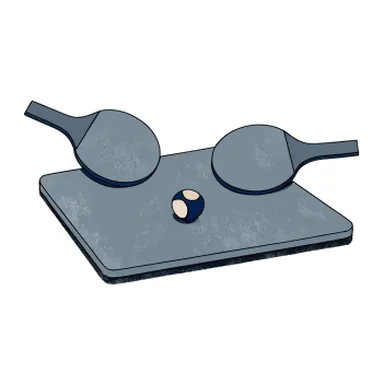
Tischtennis 탁구
In der Pause spielen wir Tischtennis.쉬는 시간에 우리는 탁구를 쳐요.
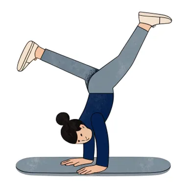
turnen, hat geturnt 체조하다
Lea turnt im Verein.Lea는 클럽에서 체조를 해요.
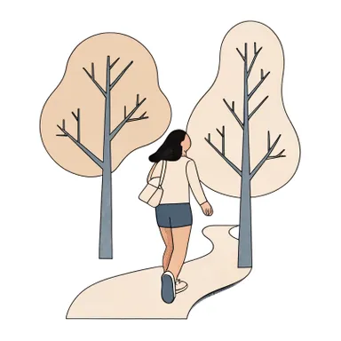
joggen, ist gejoggt 조깅하다
Sabine joggt jeden Morgen.Sabine는 아침마다 조깅해요.
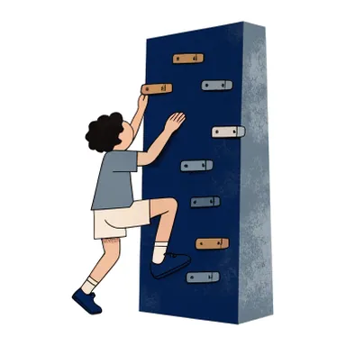
klettern, ist geklettert 암벽을 오르다, 기어오르다
Am Sonntag gehen wir klettern.일요일에 우리는 클라이밍하러 가요.
die Halle, die Hallen 체육관, 홀
Wir trainieren in der Halle.우리는 체육관에서 연습해요.
sich anmelden, hat sich angemeldet 등록하다, 신청하다
Ich möchte mich anmelden.등록하고 싶어요.
sich freuen, hat sich gefreut 기뻐하다, (auf와 함께) 기대하다
Ich freue mich auf das Spiel.나는 경기가 기대돼요.
sich interessieren, hat sich interessiert 관심이 있다
Ich interessiere mich für Musik.나는 음악에 관심이 있어요.
sich treffen, hat sich getroffen 만나다, 모이다
Wir treffen uns um fünf.우리는 다섯 시에 만나요.
sich umziehen, hat sich umgezogen 옷을 갈아입다
Ich ziehe mich schnell um.나는 얼른 옷을 갈아입어요.
sich beeilen, hat sich beeilt 서두르다
Beeil dich!서둘러!
warten, hat gewartet 기다리다
Der Trainer wartet nicht.코치님은 기다려 주지 않아요.
deshalb 그래서
Es regnet, deshalb bleibe ich zu Hause.비가 와서 나는 집에 있어요.
trotzdem 그래도, 그런데도
Ich bin müde, trotzdem gehe ich zum Training.나는 피곤하지만 그래도 연습하러 가요.
doch (부정으로 묻는 말에) 아니, 그렇지 않아
Kommst du nicht? – Doch!안 와? – 아니, 가!
이 과의 낱말로 여덟 문제를 풀어요.
예문을 보고 답해 보세요.
ich와 함께 쓰는 말은 무엇인가요?
규칙
sich freuen, sich anmelden 같은 동사는 주어와 같은 사람을 가리키는 말을 함께 써요. ich는 mich, du는 dich, wir는 uns, ihr는 euch예요. er, sie, es와 복수 sie는 모두 sich를 써요.
| 주어 | sich freuen | 예문 |
|---|---|---|
| ich | freue mich | Ich freue mich auf das Spiel. |
| du | freust dich | Freust du dich? |
| er, sie, es | freut sich | Yuna freut sich sehr. |
| wir | freuen uns | Wir freuen uns auf dich. |
| ihr | freut euch | Freut ihr euch? |
| sie, Sie | freuen sich | Die Kinder freuen sich. |
주의 mich, dich는 동사 뒤에 와요. Ich freue mich. 질문처럼 주어가 동사 뒤에 있으면 주어 다음에 와요. Freust du dich? 조동사가 있어도 자리는 같아요. Ich möchte mich anmelden. 지난 일은 haben과 함께 말해요. Ich habe mich angemeldet.
예문을 보고 답해 보세요.
sich interessieren 뒤에 오는 전치사는 무엇인가요?
규칙
정해진 전치사와 함께 쓰는 동사가 있어요. sich interessieren은 für, 앞으로 올 일을 기대하는 sich freuen은 auf와 함께 써요. 전치사 뒤에는 4격이 와요. 물을 때는 Wofür?, Worauf?라고 해요.
| 동사 | 물음 | 답 |
|---|---|---|
| sich interessieren für | Wofür interessierst du dich? | Für Sport. Für den Verein. |
| sich freuen auf | Worauf freust du dich? | Auf das Wochenende. Auf die Ferien. |
주의 동사를 외울 때 전치사까지 함께 외워요. sich interessieren für, sich freuen auf.
예문을 보고 답해 보세요.
deshalb와 trotzdem 바로 뒤에는 무엇이 오나요?
규칙
deshalb는 '그래서', trotzdem은 '그래도'라는 뜻이에요. 둘 다 문장의 첫 자리를 차지하기 때문에 바로 뒤에 동사가 오고, 그다음에 주어가 와요.
| 앞 문장 | 첫 자리 | 동사 | 나머지 |
|---|---|---|---|
| Es regnet, | deshalb | bleibe | ich zu Hause. |
| Es regnet, | trotzdem | spielen | wir Fußball. |
| Ich bin krank, | deshalb | gehe | ich zum Arzt. |
| Ich bin müde, | trotzdem | gehe | ich zum Training. |
주의 weil은 이유 쪽 문장에, deshalb는 결과 쪽 문장에 붙어요. Ich bleibe zu Hause, weil es regnet. = Es regnet, deshalb bleibe ich zu Hause.
코치가 팀에 음성 메시지를 보냈어요. 듣고 답하세요.
Nachricht vom Trainer
Trainer Hallo zusammen! Am Samstag haben wir ein Spiel in Bonn.
Trainer Wir treffen uns um neun Uhr am Bahnhof. Bitte seid pünktlich!
Trainer Wir fahren zusammen mit dem Zug. In der Halle ziehen wir uns um.
Trainer Das Spiel fängt um elf an. Die Eltern können auch kommen.
Trainer Ich freue mich auf das Spiel!
Wo ist das Spiel?
Wann trifft sich die Mannschaft?
Die Mannschaft fährt mit dem Bus.
Wir fahren zusammen mit dem Zug.
경기는 몇 시에 시작하나요?
듣고 알맞은 것을 고르세요.
Yuna는 무엇에 관심이 있나요?
Ich interessiere mich für Volleyball.
Lukas는 어떻게 하나요?
Ich bin müde. Trotzdem gehe ich zum Training.
Elif는 왜 집에 있나요?
Es regnet, deshalb bleibe ich zu Hause.
어디에서 만나나요?
Wir treffen uns um vier in der Halle.
스포츠 클럽의 안내문이에요. 읽고 답하세요.
Komm in den Sportverein!
Interessierst du dich für Sport? Dann komm zu uns!
Wir haben Fußball, Volleyball, Basketball, Tischtennis und Turnen.
Das Training für Schüler ist am Nachmittag. Volleyball: Dienstag und Donnerstag um fünf Uhr.
Du kannst zweimal kostenlos mitmachen. Dann meldest du dich an.
Der Beitrag für Schüler kostet zehn Euro im Monat.
Wir freuen uns auf dich!
Wann ist das Volleyballtraining?
Schüler können zweimal kostenlos mitmachen.
Was kostet der Beitrag für Schüler?
Im Verein gibt es Tennis.
탁구(Tischtennis)는 있지만 테니스(Tennis)는 없어요.
mich, dich, sich, uns, euch 가운데 알맞은 말을 고르세요.
Ich freue auf das Spiel.
Interessierst du für Musik?
Yuna meldet im Verein an.
er, sie, es는 sich예요.
Wir treffen um fünf.
Zieht ihr in der Halle um?
Die Kinder freuen .
für와 auf 가운데 알맞은 전치사를 고르세요.
Ich interessiere mich Sport.
Yuna freut sich das Training.
interessierst du dich? – Für Musik.
Elif interessiert sich Tanzvideos.
Wir freuen uns die Ferien.
한국어 뜻을 보고 deshalb와 trotzdem 가운데 알맞은 말을 고르세요.
Ich bin krank, bleibe ich zu Hause.
나는 아파서 집에 있어요.
Ich bin krank, gehe ich in die Schule.
나는 아프지만 그래도 학교에 가요.
Es regnet, spielen wir Fußball.
비가 오는데도 우리는 축구를 해요.
Yuna spielt gern Volleyball, meldet sie sich an.
Yuna는 배구를 좋아해서 등록해요.
Lukas hat wenig Zeit, trainiert er dreimal in der Woche.
Lukas는 시간이 적은데도 일주일에 세 번 연습해요.
낱말을 순서대로 눌러 문장을 만드세요.
나는 등록하고 싶어.
우리는 다섯 시에 만나.
나는 피곤하지만 그래도 연습하러 가.
비가 와서 나는 집에 있어.
낱말과 뜻을 짝지으세요.
듣고 그대로 써 보세요.
Ich möchte mich anmelden. 등록하고 싶어요.
Ich freue mich so! 정말 기뻐요!
Tanzen ist auch Sport. 춤도 운동이야.
Wofür interessierst du dich? 무엇에 관심이 있어?
Ich interessiere mich für Musik. 나는 음악에 관심이 있어.
Ich bin in der Tanz-AG. 나는 춤 동아리에 있어.
Ich möchte mich anmelden. 등록하고 싶어요.
Wann ist das Training? 연습은 언제예요?
Was kostet der Beitrag? 회비는 얼마예요?
Muss ich ein Formular ausfüllen? 신청서를 써야 하나요?
Ich freue mich auf das Spiel. 경기가 기대돼.
Wir freuen uns auf dich! 네가 오기를 기다릴게!
Es regnet, deshalb bleibe ich zu Hause. 비가 와서 집에 있어.
Ich bin müde, trotzdem gehe ich zum Training. 피곤하지만 그래도 연습하러 가.
대화 A에서 역할을 하나 고르세요. 상대의 말은 음성으로 나오고, 내 차례에는 직접 말해요.
관심 있는 것과 하고 있는 활동을 적으세요. 완성된 문장을 소리 내어 읽어 보세요.
Ich interessiere mich für Musik.
Deshalb bin ich in der Tanz-AG.
Wir treffen uns jeden Mittwoch.
Eine Anfrage
스포츠 클럽에 등록을 문의하는 메일을 써 보세요.
Guten Tag, ich heiße Mina Park und ich bin vierzehn Jahre alt. Ich interessiere mich für Volleyball und möchte mich im Verein anmelden. Wann ist das Training für Schüler? Und was kostet der Beitrag im Monat? Ich freue mich auf Ihre Antwort. Viele Grüße, Mina Park
다 쓴 뒤에 확인해 보세요.
Ich kann über Sport und Vereine sprechen.운동과 동아리에 대해 말할 수 있어요.
Ich kann mich in einem Verein anmelden.클럽에 등록을 문의할 수 있어요.
Ich kann sagen, wofür ich mich interessiere.무엇에 관심이 있는지 말할 수 있어요.